Harnessing biotechnologies of the nature to feed the world
#agtech
#insectprotein
#biotech
#circleeconomy
#sustainability
An increasing needs in proteins
800
600
400
200
0
Additional protein
this is the expected number of inhabitants on Earth in 2050
(FAO)
increase in world agricultural production will be needed to tackle the global food demand
(FAO)
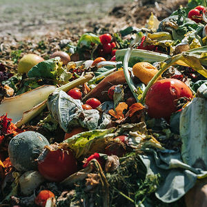
88 mln. of food is wasted every year in Europe.
(European Commission, 2016)
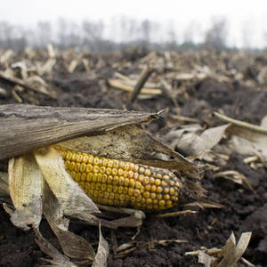
1.3 bln. more then
one-third of the world's food production is
lost.
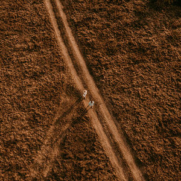
85% arable land is already in use.
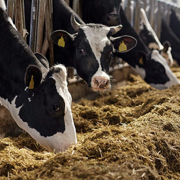
15%-25% of greenhouse gases emissions are due to farming activities.
(FAO)
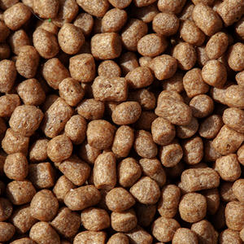
33% of caught marine fish are transformed into fishmeal for aquaculture.
(FAO, 2018)
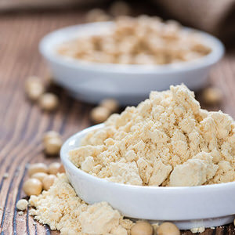
21.6% of soymeal are imported to the European Union each year, an attempt to provide necessary protein to farm animals.
(FranceAgriMer)
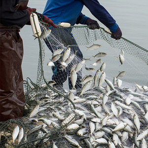
22 mln. of global marine stocks were overfished in 2015.
(FAO, 2018)
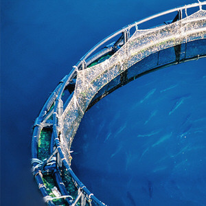
23% global aquaculture production increase, representing 19 mln.t by 2030
(FAO, 2021)
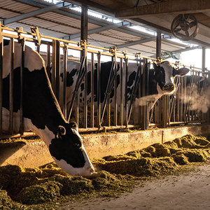
25%-30% of environmental impacts due to animal production are due to PetFood.
(Okin, 2017)
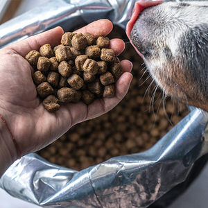
20% of the worldwide meat and fish consumption is used in PetFood.
(The Guardian, 2019)
22% of the global number of cat owners is expected to increase by 22% between 2018 and 2022. For dog owners, this rise should reach 18%.
(The Economist, 2019)
Circular economy
525 mil tonnes protein
Food (35%)
Feed (65%)
Food
1.3 billion metric tons per year (cost - efficient raw materials)
Feedstock preparation
Insect rearing
Biomass processing
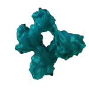
Amino acid profile similar to fishmeal
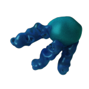
Fatty acid profile similar to palm kernel oil
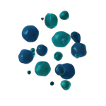
Composition similar to compost
Food quantity needed in order to obtain a weight gain of 1 kg (FAO):
Water use (m³)
per kg of protein
Land use (m²)
per kg of protein
Land use (m²)
Water use (m³)
CO2-EQ (kg)
Energy use (kj)
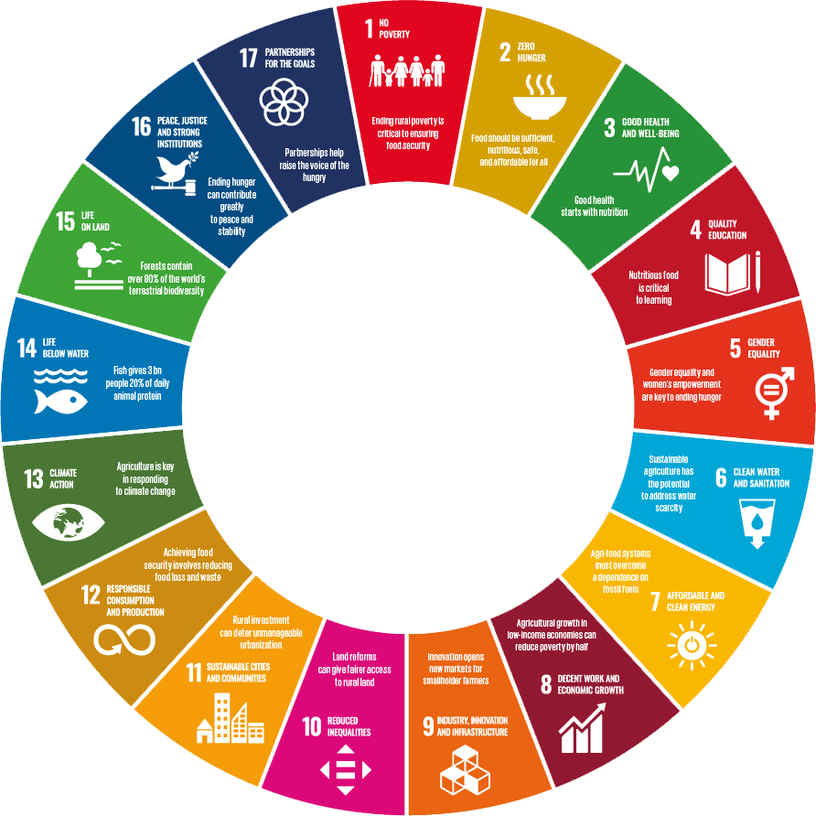
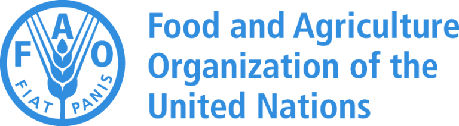
#2
End hunger and achieve food security, ensure betterment of nutrition, and ensure sustainable development;
#12
Desirable, fresh and natural ingredients for pets;
#13
Act now to stop global warming;
#14
Ensure and sustain sustainable use of the World’s Oceans and its resources;
#15
Protecting, rebuilding, and supporting sustainable use of ecosystems on land, supporting sustainable forest usage, combating, desertification, halting and reversing degradation, and stopping biodiversity loss.
Securing sustainable and effective use of resources in the production
Reduce the amount of food wasted
Promotion of sustainable consumption and regenerative agriculture
Natural products like protein meals, lipids, and puree products are sustainable and nutritious for humans and pets
Substitute environmentally damaging protein- and fat sources
Balanced amino acid profile.
Very good digestibility (>85%).
Highly palatable.
Adequate techno-functional properties.
In pet food products, given its nutritional profile and hypoallergenic properties.
In fish feed conversion rate, and better gut health.
Shrimps feed as an attractant for better feed intake.
In broiler and pig feed for better nutrient digestion and satisfactory productive performances.
High in lauric acid that has antibacterial and antiviral properties.
Easily digestible source of energy.
Naturally palatable.
Simple integration into products.
In piglet feed for improved feed intake and better gut health.
In broiler feed with satisfactory productive performances and overall meat quality.
In cosmetics and detergents as an alternative to animal or vegetable fat.
High organic matter (>85%) with nitrogen and minerals.
Contains chitin that improves the defense mechanisms of plants.
Safe and ready to be applied on the field.
In soil amendments for farms, gardens, horticulture, and greenhouse.
In low fertile soil (acid and sandy soil) with satisfactory results.
In crop production for higher yields.
N
7
Nitrogen
P
Phosphorus
15
K
Potassium
19
3-4%
2-3%
4-4,5%
2020
Ensuring the sustainable and efficient utilization of resources in the production process
2021
Implemented researched technologies for rearing and breeding house crickets in commercially viable operations within the markets of Czech Republic, Germany, France, Belgium, and the Netherlands.
2022
Developing insect processing technology for food applications. Investing in a Black Soldier Fly Larvae (BSFL) industrial plant project. Conducting feasibility studies for commercially viable BSFL industrial plant activities in Lithuania, and validating the Proof of Concept for the BSFL industrial plant.
2023
Detailed engineering and design for the BSFL industrial plant.
Letters of Intent
(LOIs) secured for feedstock supply and production demand.
Completing the initial factory design and
preparing the land plot.
Securing equity investment.
TBA
First factory construction
TBA
Plant construction completion and commercial operations